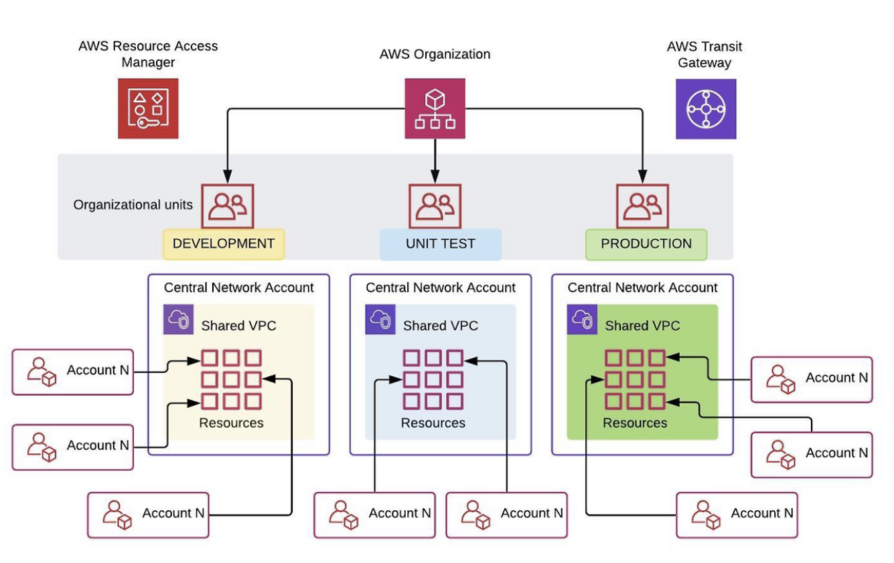
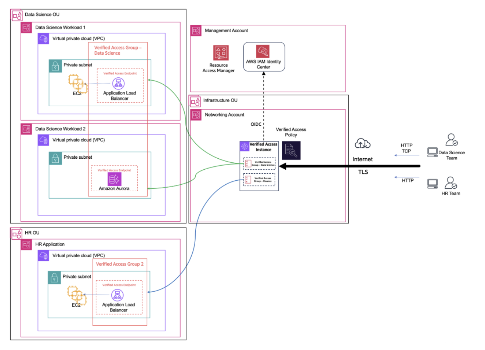

AWS 인프라 분석 - Multi Account 관리
1. 개요
1.1 인프라 구성 요약
AWS Organizations의 Unit(OU) 단위로 VPC를 분리하고 운영되는 구조에 대해 알아보고자 합니다.
각 OU는 비즈니스 유닛 혹은 환경에 따라 전용 VPC를 가지고 있으며, 해당 OU 내 모든 계정이 공유 VPC 서브넷을 통해 네트워크에 접근합니다.
핵심 구성 요소는 다음과 같습니다.
- AWS Organizations: OU 계층 구조를 통한 계정 그룹핑 및 정책 관리
- 공유 VPC (Shared VPC): OU 단위로 생성된 중앙 관리형 VPC
- AWS RAM (Resource Access Manager): OU ID 기반 VPC 서브넷 자동 공유
- AWS Transit Gateway: OU 간 VPC 연결 및 온프레미스 연동
- SCP (Service Control Policy): OU 단위 네트워크 접근 제어 및 VPC 생성 제한
- AWS Verified Access: Zero Trust 기반 중앙 집중식 애플리케이션 접근 제어
1.2 분석 범위 및 목적
OU 별 VPC 분리 구조의 전체적인 아키텍처에 대해 이해하고, 각 구성요소의 역할 및 상호작용에 대해 파악하고자 합니다.
또한 보안 관점에서의 격리 수준 및 통제 메커니즘을 분석하고, 현재 구조의 한계점을 도출하여 개선 방향을 제시하고자 합니다.
2. 아키텍처 분석

2.1 전체 구성도
[ AWS Organizations ]
Root
├── OU: Infrastructure (Network Account)
│ ├── VPC: shared-infra (Transit Gateway 허브)
│ └── RAM 공유 → 전체 OU
├── OU: Content-Prod
│ ├── VPC: content-prod (RAM으로 OU 내 자동 공유)
│ ├── Account: content-app-1
│ └── Account: content-app-2
├── OU: Wealth-Prod
│ ├── VPC: wealth-prod (RAM으로 OU 내 자동 공유)
│ └── Account: wealth-app-1
├── OU: HR
│ ├── VPC: hr-prod (private subnet only)
│ └── Verified Access Endpoint (Networking Account 공유)
└── OU: Security
├── Log Archive Account
└── Security Tooling Account (GuardDuty, Security Hub)
전체 흐름을 요약하면 다음과 같습니다.
사용자 요청 → AWS WAF / Verified Access → 인증/인가 통과 후 → Transit Gateway를 통해 OU의 VPC로 라우팅 → OU 내 공유 서브넷에 배포된 워크로드 계정 리소스에 접근, 모든 트래픽 로그 → Security OU의 Log Archive 계정으로 중앙 집계

2.2 구성요소별 역할
1) OU 역할 분담
- Infrastructure: Networking 계정, Transit Gateway, Verified Access 중앙 관리 (허브 VPC로 공유 서비스 제공)
- Content-Prod: 콘텐츠 비즈니스 유닛 프로덕션 워크로드 (OU 내 공유)
- Wealth-Prod: 자산 관리 비즈니스 유닛 프로덕션 워크로드 (OU 내 공유)
- HR: 인사 시스템 — 고도 민감 데이터 (private-only)
- Security: 로그 아카이브, 보안 툴링, 감사 대응 (외부 접근 차단)
- Sandbox: 개발자의 실험 환경 (격리)
2) 공유 VPC + AWS RAM
OU 별로 VPC를 하나 생성하고 RAM Resource Share의 Resource Principal에 OU ID를 지정합니다.
해당 설정으로 OU에 새 계정이 추가되면 별도 설정 없이 자동으로 VPC 서브넷 접근 권한이 부여됩니다.
예시) VPC Owner/Participant — Network 계정
- VPC Owner: 서브넷, 라우팅 테이블, NAT Gateway, VPC Endpoint 생성 및 관리 가능
- VPC Participant (각 워크로드 계정): EC2, RDS, Lambda 등 애플리케이션 리소스를 배포
서브넷 설계 시 VPC Participant마다 전용 서브넷 세트를 AZ 별로 할당합니다.
3) SCP 기반 접근 통제
RAM 기본 권한은 범위가 넓어서 의도치 않은 OU 간 VPC 공유가 발생할 수 있습니다. 이를 방지하기 위해 SCP로 권한을 제한합니다.
- VPC 직접 생성 차단: 워크로드 계정이 자체 VPC를 만들지 못하도록 합니다.
- VPC 공유 권한 제한: RAM Resource Share 생성 및 연결 권한을 Network 계정에만 허용합니다.
4) Transit Gateway
OU 간 VPC 연결 및 온프레미스 네트워크 연동을 담당합니다. Hub and Spoke 구조로 중앙 Network 계정의 Transit Gateway가 각 OU VPC와 연결됩니다.
5) AWS Verified Access — Zero Trust
중앙 Network 계정에 Verified Access 인스턴스를 배포하고 OU 별로 Verified Access Group을 RAM으로 공유합니다.
VPN이나 Bastion Host 없이 사용자 신원 및 디바이스 상태를 기반으로 애플리케이션 접근을 제어합니다.
3. 보안 관점 분석
3.1 보안 고려 사항
1) 구조적 강점: 계정 + 네트워크 이중 방어
VPC를 단순하게 격리한 것과는 다르게 AWS 계정 경계가 1차 방어선 역할을 합니다. 한 계정이 침해되더라도 다른 OU의 계정으로 자동 전파되지 않습니다.
2) 관리 통제: VPC 소유권 중앙 집중
워크로드 계정은 서브넷 사용권만 가집니다. 라우팅 테이블, NAT Gateway, VPC Endpoint 변경 및 생성은 Network 계정만 가능하여 무단 네트워크 변경을 차단합니다.
3) 운영 보안: RAM + OU ID 자동화로 신규 계정 온보딩 보안 강화
신규 계정이 OU에 추가될 때 별도 수작업 없이 미리 정의된 VPC 서브넷에만 접근 가능합니다.
4) 접근 보안: Zero Trust 접근 제어 — Verified Access
IP 주소나 네트워크 위치가 아닌 사용자 신원과 디바이스 상태를 기준으로 접근을 허용합니다. VPN 없이도 Private Subnet 애플리케이션에 안전하게 접근 가능합니다.
3.2 한계점
1) Noisy Neighbor 문제
동일 OU 내 여러 계정이 공유 VPC 서브넷을 사용하는 구조이기 때문에, 특정 계정이 IP 주소를 대량으로 소진하는 경우 같은 VPC를 공유하는 다른 계정에 영향을 미칩니다.
2) VPC 서비스 쿼터 공유
Hyperplane ENI 한도가 OU 내 모든 계정이 공유하는 자원입니다. NLB, PrivateLink Endpoint, Lambda 함수가 각각 ENI를 소비하므로 대규모 운영 시 한도 초과 위험이 발생합니다.
3) OU 간 접근 통제 복잡성
서로 다른 OU의 워크로드가 통신해야 할 때 Transit Gateway 라우팅 테이블 설정이 복잡해집니다. OU가 늘어날수록 허용/차단 경로 관리 부담이 증가합니다.
4) SCP 적용 범위의 한계
SCP는 IAM 권한을 제한하지만 이미 존재하는 리소스를 완전히 차단하지는 못합니다. SCP 도입 이전에 생성된 자체 VPC나 RAM 같은 공유 자원이 있다면 별도 정리 작업이 필요합니다.
5) Verified Access HTTP 유휴 타임아웃
Verified Access HTTP 유휴 타임아웃이 60초로 고정되어 있습니다. 장기 실행 작업이나 WebSocket 기반 애플리케이션에서 연결이 끊기는 경우가 발생할 수 있습니다.
3.3 개선 사항
1) 서브넷 IP 소진 방지 모니터링 자동화
CloudWatch Metric을 통해 NetworkInterfaceCount, AvailableIpAddressCount 지표 알람을 설정합니다. 각 서브넷의 여유 IP 주소를 주기적으로 확인하여 임계치 도달 시 자동으로 알림을 발송합니다.
2) 서비스 쿼터 사전 관리
Hyperplane ENI 한도를 AWS Support를 통해 사전에 증설 요청합니다. OU별 VPC를 분할 때 예상 ENI 소비량을 계산하여 VPC CIDR 크기를 설계하고, AWS Service Quotas 대시보드를 통해 정기적으로 모니터링 체계를 수립합니다.
3) Transit Gateway 라우팅 정책 체계화
Transit Gateway Route Table을 OU별로 분리하여 허용된 경로만 명시적으로 관리합니다. OU 간 통신이 필요한 경우 별도 승인 프로세스를 통해 라우팅 경로를 추가하는 거버넌스를 수립하고, AWS Network Firewall을 Transit Gateway와 연동하여 OU 간 트래픽을 검사합니다.
4) SCP 기존 리소스 정리 자동화
AWS Config Rules로 SCP 정책에 위반되는 기존 리소스를 지속적으로 탐지합니다. AWS Config Remediation으로 비준수 리소스 자동 알림 및 수동 대응 워크플로우를 구성하고, SCP 적용 전 AWS Access Analyzer로 기존 리소스 영향도를 사전 분석합니다.
5) 장기 연결 시 애플리케이션 대응
Verified Access 60초 유휴 타임아웃을 고려하여 애플리케이션에 KeepAlive를 설정합니다. WebSocket이나 장기 실행 작업의 경우 별도 NLB + PrivateLink 경로를 검토하고, Verified Access 로그를 통해 타임아웃으로 인한 연결 실패 패턴을 지속 모니터링합니다.
6) 규정 준수 요건이 높은 워크로드 추가 격리
CloudTrail Organization Trail로 전체 OU 활동 로그를 Log Archive 계정에 중앙 집계합니다. 크로스 계정 접근 시 STS Assume Role로 필요한 권한만 임시로 위임하여 영구 자격증명 사용을 제거합니다.